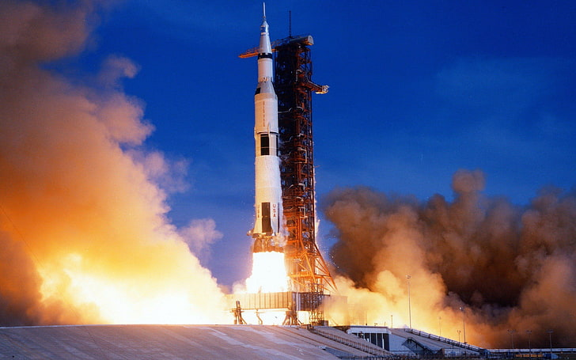

Saturn V (izgovara se kao "Saturn pet") je bio američka potrošna raketa koju
je koristila NASA između 1967. i 1973. Trostupanjska, pogonjena tekućim gorivom,
raketa za dizanje teških tereta, razvijena je kako bi podržavala Apollo program
za ljudsko istraživanje Mjeseca, a kasnije je korišten za lansiranje Skylab-a,
prve američke svemirske stanice. Saturn V lansiran je 13 puta iz Kennedyjevog
svemirskog centra na Floridi bez gubitka posade ili tereta. Saturn V ostaje
najviša, najteža i najmoćnija raketa ikada dovedena u operativni status do 2017.
godine i drži rekord o najtežem teretnom opterećenju i najvećem kapacitetu tereta
za nisku Zemljinu orbitu (LEO) od 140.000 kg (310.000 lb), koji je uključivao
treći stupanj rakete i neizgoreno gorivo koji je potreban za slanje Apollo
zapovjedništva/servisnog modula i lunarnog modula na Mjesec. Najveći proizvodni
model obitelji Saturn rakete, Saturn V, dizajniran je pod vodstvom Wernhera von
Brauna i Arthura Rudolpha u Marshallovom svemirskom letu u Huntsvilleu, Alabama,
s Boeingom, Sjevernoameričkim zrakoplovstvom, Douglasom i IBM-om kao vodećim
izvođačima. Do danas, Saturn V ostaje jedino lansirno vozilo za lansiranje misija
za nošenje ljudi izvan niske orbite Zemlje. Ukupno je izgrađeno 15 vozila koja
su sposobna za let, ali ih je samo 13 letjelo. Dodatna tri vozila izrađena su za
potrebe ispitivanja na zemlji. Na Mjesec je poslano ukupno 24 astronauta, od kojih
su tri poslana dvaput, u četiri godine u razdoblju od prosinca 1968. do prosinca
1972. godine. |
 |